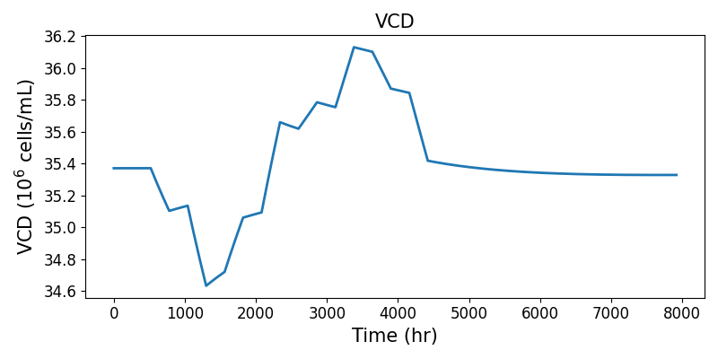
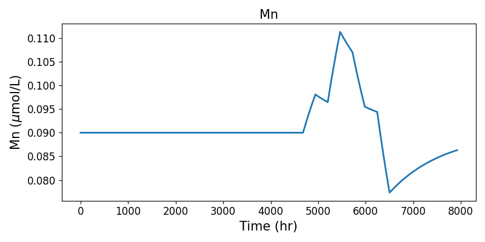
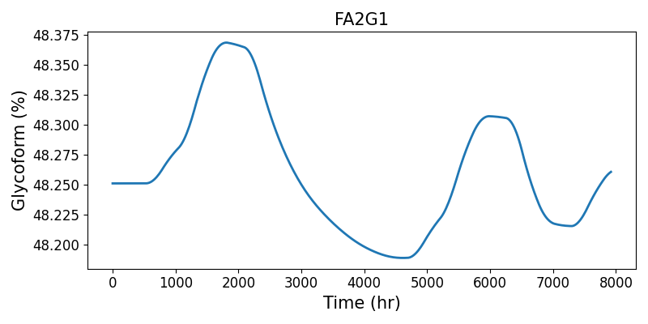

Steady-State N-linked Glycosylation Simulation
You can simulate the steady-state N-linked Glycosylation in a perfusion bioreactor as follows
import numpy as np
from vLab.PerfusionSimulator.GlycosylationODESolver import ODESolver
from vLab.GlycosylationModelBase.GlycosylationNetwork import GlycosylationNetwork
from vLab.GlycosylationModelBase.GlycosylationModelParams import CellCultureVariables, GlycosylationModelParamClass
fp = GlycosylationNetwork(network_data_path='./data/Network Description.csv')
p = GlycosylationModelParamClass()
x = CellCultureVariables(1.5, 0.01, 0.1198, 66.3856,
np.array([0.490 + 1.452, 0.117 + 0.379, 0.058 + 0.190]) * 1e3,
np.array([1.62, 0.043, 0.1158, 0.040]) * 1e3)
# compute boundary conditions
ic = np.zeros((fp.nos + fp.nns + fp.nn))
ic[0] = x.mabtiter # umol / L
ic[fp.nos:(fp.nos + fp.nns)] = x.nscyt * 40 # nucleotide sugar concentrations in umol / L.third entry is mystery
ic[fp.nos + 3] = x.udpgalcyt * 1e3 * 40 # updating with correct UDP-Gal concentration
ic[(fp.nos + fp.nns):] = x.ncyt # sum of nucleotide concentrations in umol / L
Solve for N-glycan in the steady state operation and summarize them in major oligosaccharide residues (HM, FA1G1, FA2G0, FA2G1, FA2G2, SIA)
t = [0,1]
ode_solver = ODESolver(t, ic, x, p, fp)
HM, FA1G1, FA2G0, FA2G1, FA2G2, SIA = ode_solver.solve()
for x in ode_solver.os[:, -1]:
print("{:10.4f}".format(x))
print(HM, FA1G1, FA2G0, FA2G1, FA2G2, SIA)
Plot the glycan distribution!
plt.bar(x=['HM', 'FA1G1', 'FA2G0', 'FA2G1', 'FA2G2', 'SIA'],
height=[HM, FA1G1, FA2G0, FA2G1, FA2G2, SIA])
plt.ylabel('Glycoforms (%)')
plt.legend(loc='upper left')

Dynamic N-linked Glycosylation Simulation
We first load the default feed strategy from data/states_132hours.csv, glycosylation network from
data/Network Description.csv and glycosylation model parameters. Then we simulate the N-linked Glycosylation in a
perfusion bioreactor by initializing a new DynamicGlycosylationSolver class and calling method .solve().
import numpy as np
import matplotlib.pyplot as plt
from vLab.DynamicGlycosylationSimulator.Util import compute_species_distribution
from vLab.GlycosylationModelBase.GlycosylationNetwork import GlycosylationNetwork
from vLab.GlycosylationModelBase.GlycosylationModelParams import GlycosylationModelParamClass
from vLab.DynamicGlycosylationSimulator.DynamicGlycosylationSolver import DynamicGlycosylationSolver
inputs = np.loadtxt('data/states_132hours.csv', delimiter=',')
fp = GlycosylationNetwork(network_data_path='data/Network Description.csv')
p = GlycosylationModelParamClass(is_dynamic=True)
solver = DynamicGlycosylationSolver(inputs, p, fp, 20)
states_buffer = solver.solve()
Plot the macroscopic viable cell density (VCD)
plt.figure(figsize=(8, 4))
plt.plot(solver.tsp, states_buffer[:, 1] / states_buffer[:, 0], lw=2, label='VCD')
plt.xticks(fontsize=12)
plt.yticks(fontsize=12)
plt.title('VCD', fontsize=15)
plt.ylabel(r'VCD ($10^6$ cells/mL)', fontsize=15)
plt.xlabel('Time (hr)', fontsize=15)
plt.tight_layout()
plt.show()

Plot Mn concentration
plt.figure(figsize=(8, 4))
plt.plot(solver.tsp, states_buffer[:, 2] / states_buffer[:, 0], lw=2, label='Mn')
plt.xticks(fontsize=12)
plt.yticks(fontsize=12)
plt.title('Mn', fontsize=15)
plt.ylabel(r'Mn ($\mu$mol/L)', fontsize=15)
plt.xlabel('Time (hr)', fontsize=15)
plt.tight_layout()
plt.show()

Solve for dynamic N-glycan distribution in a perfusion bioreactor and summarize them in major oligosaccharide residues (HM, FA1G1, FA2G0, FA2G1, FA2G2, SIA). Then plot HM distribution
HM, FA1G1, FA2G0, FA2G1, FA2G2, SIA = compute_species_distribution(states_buffer[:, 6:].T)
plt.figure(figsize=(8, 4))
plt.plot(solver.tsp, HM, lw=2, label='HM')
plt.xticks(fontsize=12)
plt.yticks(fontsize=12)
plt.title('HM', fontsize=15)
plt.ylabel('Glycoform (%)', fontsize=15)
plt.xlabel('Time (hr)', fontsize=15)
plt.tight_layout()
plt.show()

Plot FA2G1 distribution
plt.figure(figsize=(8, 4))
plt.plot(solver.tsp, FA2G1, lw=2, label='FA2G1')
plt.xticks(fontsize=12)
plt.yticks(fontsize=12)
plt.title('FA2G1', fontsize=15)
plt.ylabel('Glycoform (%)', fontsize=15)
plt.xlabel('Time (hr)', fontsize=15)
plt.tight_layout()
plt.show()
